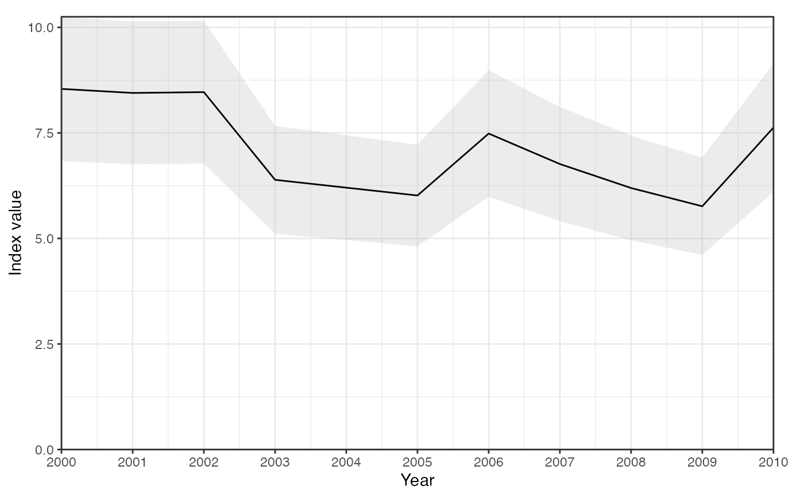

Plots one or more index time series (each from sdmTMB::get_index() /
sdmTMB::get_index_split()) with confidence ribbons. A named list of indices
is faceted or coloured by name.
Examples
idx <- data.frame(year = 2000:2010, est = runif(11, 5, 9))
idx$lwr <- idx$est * 0.8
idx$upr <- idx$est * 1.2
plot_index(idx)
